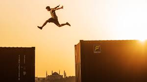
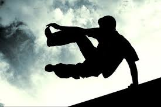
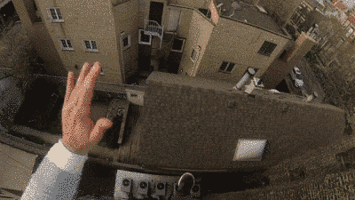

El término free running (ahora freerunning ) fue acuñado durante la filmación de Jump London, como una manera de presentar parkour en el mundo de habla Inglés. Sin embargo, el término ha llegado a representar un concepto separado, claramente diferente de parkour una distinción que a menudo se pierden debido a las similitudes estéticas. Parkour como disciplina hace hincapié en la eficiencia, mientras que freerunning encarna la libertad de movimiento e incluye muchas maniobras acrobáticas. Aunque los dos son a menudo un aspecto similar, la mentalidad de cada uno son muy diferentes. El fundador y creador de TCL, Sébastien Foucan , define freerunning como una disciplina de auto desarrollo, siguiendo su propio camino, que desarrolló porque sentía que carecía de la suficiente creatividad parkour y auto-expresión como una definición de cada uno de freerunner seguir su propio camino.  |
Trucos calle tienden a ser realizadas en terreno plano o de una altura, mientras que los movimientos freerunning tienden a involucrar el uso de obstáculos o la idea general del movimiento de un lugar a otro. Debido a la naturaleza de TCL, se mueve puede estar sujeto al medio ambiente, así como las propias interpretaciones. Debido a esto no hay virtualmente una cantidad ilimitada de "movimientos" que uno puede realizar. Algunos ejemplos básicos de los movimientos que son más propensos a ser clasificados como se mueve freerunning son:  Rompemuñecas/Dash Bóveda de su cuerpo sobre una plataforma usando los brazos para el impulso hacia adelante. Diving Frontflip/Eagle Flip/Superman Flip A frontflip se ejecuta sobre una pared u otro obstáculo, por lo general con una gran caída en el otro lado. Se conoce como frontflip buceo (buceo o frente), ya que el atleta está obligado a bucear por encima del obstáculo antes de iniciar la cirugía estética. Dive Roll/Rodada Al saltar, se realiza una voltereta para amortiguar la caída de esta. Kong Vault/Monkey Vault Bóveda de su cuerpo sobre una barandilla o plataforma, utilizando las palmas de impulso para empujar. Reverse Kong Vault/Reverso En lugar de saltar sobre una barandilla con una bóveda de mono, que puede ser la manera más eficiente, el atleta añade un giro de 360 grados en el eje horizontal para hacer el movimiento más estético, así como aumentar su coordinación. Turn Vault Saltando sobre una pared o de la plataforma mientras se gira el cuerpo 180 grados para saltar. Wall Flip El atleta corre en una pared, coloca un pie, y hace un backflip al contrario de la pared Wall Spin/360 El atleta corre en una pared, salta, coloca ambas manos en la pared, y gira 360 grados verticalmente mientras se permanece en contacto con la pared. Empujar con una mano ayuda a la rotación. Side Flip/Arabe El atleta corre hacia adelante y da un salto de lado ayudado de su cintura y su cabeza para dar un giro de lado hay que agruparse y mirar hacia un lado es como hacer una estrella con salto y sin manos. |
La explicación más común sostiene que los practicantes del parkour pretenden trasladarse con la máxima rapidez, mientras que los free runners se preocupan por efectuar piruetas y movimientos estéticos durante su trayecto, dejando como elemento secundario la velocidad del tránsito y su mera eficacia.  |